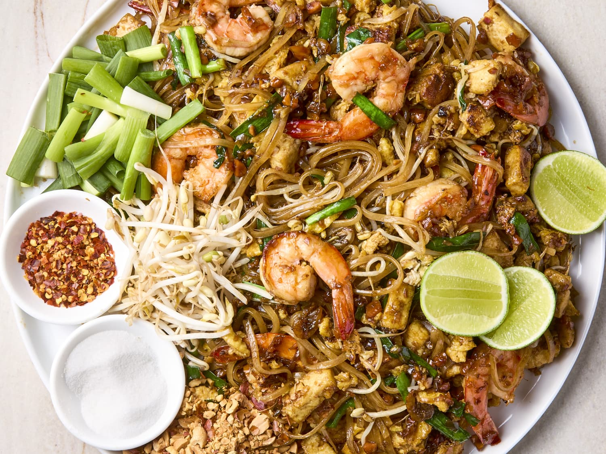
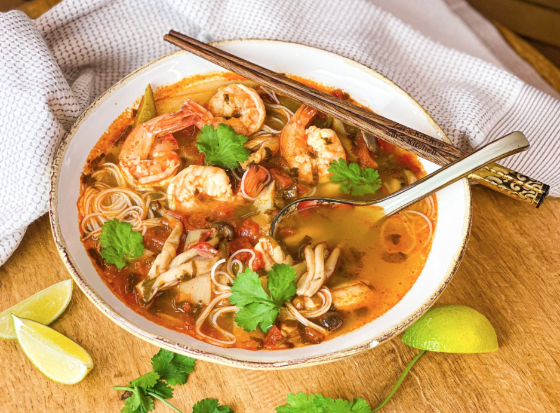
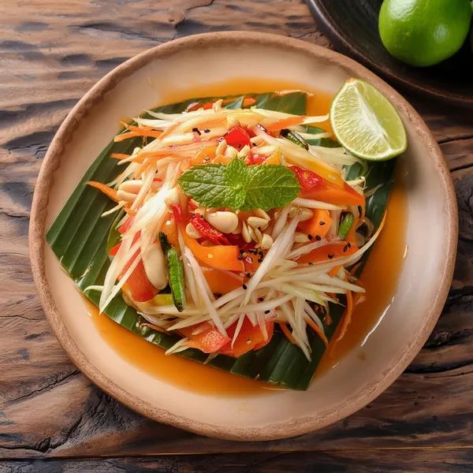
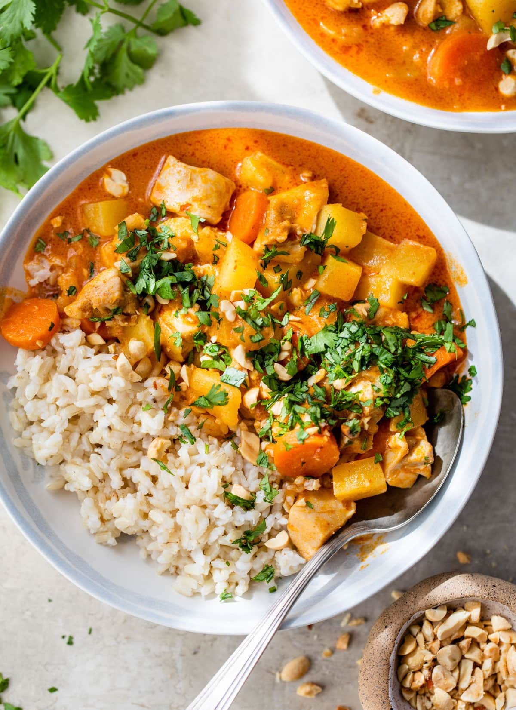

Taylandın Məşhur Yeməkləri

Pad Thai
Ənənəvi Tayland yeməyi olan Pad Thai, düyü əriştəsi, tamarind sousu və müxtəlif tərəvəzlərlə hazırlanır.

Tom Yum
Acılı və turş dadı ilə məşhur olan Tom Yum şorbası, dəniz məhsulları və ədviyyatlarla zənginləşdirilmişdir.

Green Curry
Yaşıl köri pastası, hindistan qozu südü və tərəvəzlərlə hazırlanan dadlı bir yeməkdir.

Som Tum
Təzə papaya salatı olan Som Tum, turş və şirin dadları ilə fərqlənir.

Mango Sticky Rice
Hindistan qozu südü ilə hazırlanan yapışqan düyü və yetişmiş mango ilə dadlı bir desertdir.

Massaman Curry
Massaman köri, şirin və ədviyyatlı dadları ilə Tayland və müsəlman mətbəxinin qarışığıdır.